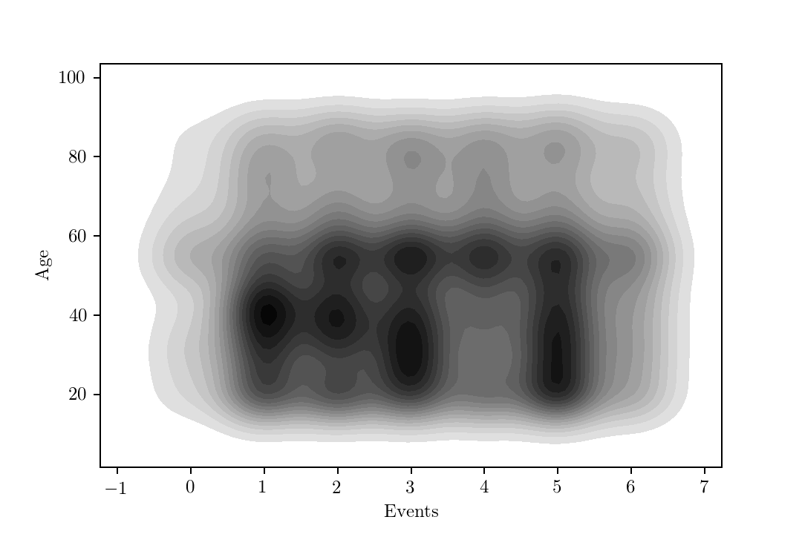
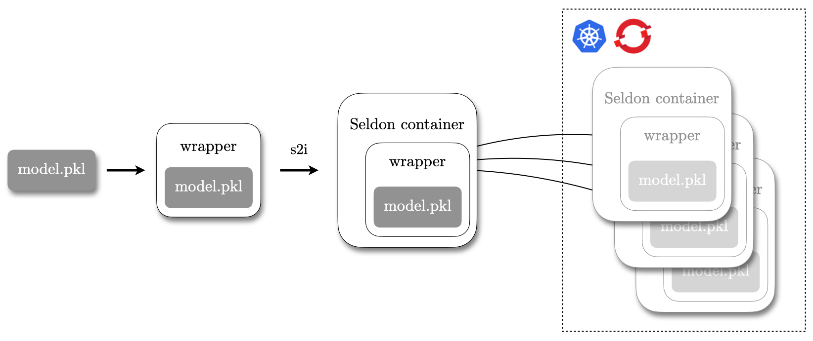

Serving models with Seldon
Deploying machine learning models in production comes with several requirements. We must manage the model lifecycle. We need reproducibility and typically use containerised workflows.
Seldon is a tool which aims at providing a production workflow for machine learning models, allowing to build model serving containers which expose well-defined APIs.
In this post, I'll show how to create a simple model and how to deploy it with Seldon. The model is a customer segmentation one. The goal is to classify a customer according to a segment (0, 1 or 2), according to its age, income, whether they engaged with previous campaigns and the campaign type.
Once we train the model, we deploy it with Seldon in a container orchestration platform such as Kubernetes and OpenShift.
Create data
We use the Python's scikit-learn to train our model.
However, we must first simulate some data to train it.
We start by simulating the users age (\(a\)) and income (\(c\)). We assume income is correlated with age.

Let's assume we have eight distinct events (\(e=\left(0, 1, \dots, 7\right)\)). We sample them from a multinomial distribution and also assume that two different age bands have different distributions, just to add some variation.
\[ e = \begin{cases} \mathcal{M}\left(7, \left\lbrace 0.026, 0.195, 0.156, 0.208, 0.130, 0.205, 0.078 \right\rbrace\right) & \text{if}\ a < 50 \\\\ \mathcal{M}\left(7, \left\lbrace 0.052, 0.143, 0.169, 0.182, 0.164, 0.182, 0.104 \right\rbrace\right) & \text{if}\ a \geq 50 \end{cases} \]
The responses are calculated as 0 or 1, representing "true" or "false", and sampled from Bernoulli
distributions, with different distributions depending on the event, again just to add some variation.
To predict the response of a customer, we use a logistic model, with coefficients \(\beta_{age}=-0.0004\) and \(\beta_{income}=0.0001\). For the customer level, we use a negative binomial model with coefficients \(\beta_{age}=-0.0233\) and \(\beta_{income}=0.0054\). This results in the following distribution of customer levels:

Finally, we create the response according to negative binomial model with coefficients \(\beta_{level}=0.1862\) and \(\beta_{response}=0.2076\). We get the following segments, stratified by age and income:
Train model
Now that we have our simulated data, we can train a model.
Generally, it is straightforward to train model data when in pandas data frame format.
Let's proceed with creating a data frame with the data we've just generated:
import pandas as pd
data = { 'age': age, 'income': income,
'class': _class, 'response': response,
'segment': segment, 'events': events }
df = pd.DataFrame(data)
We now create the training and testing datasets. The first thing is to define the classifier's inputs and outputs and then splitting each of them into training and testing. Here I have used a split of 60%/40% for training and testing respectively.
from sklearn.model_selection import train_test_split
cols = ['age', 'income', 'response', 'events']
inputs = df[cols]
outputs = df['segment']
# split dataset
X_train, X_test, y_train, y_test = \
train_test_split(inputs,
outputs,
test_size=0.4,
random_state=23)
We use a Random Forest classifier as the underlying algorithm for our model.
These are available in sciki-learn with the RandomForestClassifier class.
However, scikit-learn does not support categorical variables out of the box 1.
To deal with them, we build a Pipeline, which allows to chain multiple transformations to our data, including a categorical variable processor, such as OrdinalEncoder 2.
We use DataFrameMapper to apply the encoder to the response and events columns and leave the remaining unchanged.
from sklearn.ensemble import RandomForestClassifier
from sklearn import preprocessing
from sklearn.pipeline import Pipeline
def build_RF_pipeline(inputs, outputs, rf=None):
if not rf:
rf = RandomForestClassifier()
pipeline = Pipeline([
("mapper", DataFrameMapper([
(['response', 'events'],
preprocessing.OrdinalEncoder()),
(['age', 'income'], None)
])),
("classifier", rf)
])
pipeline.fit(inputs, outputs)
return pipeline
The actual training involves a simple hyper-parameter estimation using
RandomizedSearchCV. This method performs a type of parameter grid search but restricting the search to only the specified values. For the scope of this post, it is not
necessary to perform an exhaustive hyperparameter estimation.
The RF_estimation function returns the best-fitted model after searching with the test dataset.
def RF_estimation(inputs, outputs,
estimator_steps=10,
depth_steps=10,
min_samples_split=None,
min_samples_leaf=None):
# hyper-parameter estimation
n_estimators = [int(x) for x in np.linspace(start=50,
stop=100,
num=estimator_steps)]
max_depth = [int(x) for x in np.linspace(3, 10, num=depth_steps)]
max_depth.append(None)
if not min_samples_split:
min_samples_split = [1, 2, 4]
if not min_samples_leaf:
min_samples_leaf = [1, 2, 4]
bootstrap = [True, False]
random_grid = {'n_estimators': n_estimators,
'max_depth': max_depth,
'min_samples_split': min_samples_split,
'min_samples_leaf': min_samples_leaf,
'bootstrap': bootstrap}
rf_random = RandomizedSearchCV(
estimator=RandomForestClassifier(),
param_distributions=random_grid,
n_iter=100,
scoring='neg_mean_absolute_error',
cv=3, verbose=1, random_state=42, n_jobs=-1)
rf_random.fit(inputs, outputs)
best_random = rf_random.best_estimator_
return best_random
After applying the parameter estimation, we take the best scoring model and calculate the MSE. Unsurprisingly (given the simple model and simulated data), we get a very good fit.
rf_predictions = random_forest_pipeline.predict(X_test)
print(f"MSE: {random_forest_pipeline.score(X_test, y_test)*100}%")
# MSE: 99.95%
The final step is serialising the model. Serialisation is necessary since we only serve the pre-trained model.
To do so, we use the joblib library and save the model to a model.pkl file.
import joblib
#save mode in filesystem
joblib.dump(random_forest_pipeline, 'model.pkl')
Deploy model
It is important to note that we don't need the model training code included in the Seldon server. The purpose of Seldon is not to train models, but to deploy them and manage their lifecycle. This workflow means that a typical Seldon deployment would only include the prediction endpoint implementation and a serialised model. This provision is made by firstly create a wrapper for our model which implements the Seldon endpoints.
Simple model
We create a Python script called Model.py 3.
The primary prediction endpoint uses the following signature:
def predict(self, X: np.ndarray, names: Iterable[str], meta: Dict = None)
The wrapper is straightforward, in this example.
We use the joblib library again, to load the serialised model model.pkl, and then pass through any JSON payload as inputs (X) to the model to get a prediction as well as using Python's default logging
to provide some feedback.
import joblib
import logging
class Model(object):
def __init__(self):
logger.info("Initializing.")
logger.info("Loading model.")
self.model = joblib.load('model.pkl')
def predict(self, X, features_names):
return self.model.predict_proba(X)
We now build the model using the s2i (source-to-image).
As the name implies, s2i's allow to create a container image from source code, taking care of any necessary intermediate steps.
Seldon support several types of builds (such as Python, R and Java) 4.
Typically s2i's rely on certain conventions (over configuration) on your application structure. A requirement when building a Seldon model using its s2i is to provide some specific environment variables. These are usually stored in a file located in $REPO/.s2i/environment. For instance, for this model we use:
MODEL_NAME=Model
API_TYPE=REST
SERVICE_TYPE=MODEL
PERSISTENCE=0
The MODEL_NAME corresponds to the script we've created previously, Model.py and instructs Seldon to use it as the REST endpoint provider. API_TYPE defines the endpoint interface. We use the REST interface, other possibilities include gRPC, for instance.

To build the container image using the s2i, assuming you want an image named \(NAME` and tagged with `\)TAG, we simply need to run:
$ s2i build $REPO \
seldonio/seldon-core-s2i-python36:0.18 \
$NAME:$TAG
You can provide the location of your source code either by specifying a remote Git repository or by passing a local one. Once the container image builds, you can now run it using, for instance:
docker run -i --rm -p 5000:5000 $NAME:$TAG
Let's get a prediction from the model:
$ curl --header "Content-Type: application/json" \
--request POST \
--data '{"data":{"ndarray":[34.0, 100.0, 1, 2](/34.0,-100.0,-1,-2.html)}}' \
http://localhost:5000/predict
This will return a prediction:
{
"data": {
"names": ["t:0","t:1","t:2"],
"ndarray": [0.0,0.9980208571211083,0.00197914287889168](/0.0,0.9980208571211083,0.00197914287889168.html)},
"meta": {}
}
This response corresponds to the probability of each segment (0, 1 and 2), respectively.
We can see that a customer with this profile is classified as a segment 1 with an associated probability of 99.8%.
With metrics
Seldon provides basic metrics by default, covering service, predictor and model name, version and image. However, you can directly add custom metrics. Going back to our Model wrapper class, we add a new method called metrics which returns custom metrics. The metrics are compatible with Prometheus and, therefore, the metric type should be familiar if you have dealt with Prometheus before. These include, for instance:
- Counters
- Gauges
- Timers
Let's add to the wrapper:
import joblib
import logging
class Model(object):
def __init__(self):
logger.info("Initializing.")
logger.info("Loading model.")
self.model = joblib.load('model.pkl')
def predict(self, X, features_names):
return self.model.predict_proba(X)
# new custom metrics endpoint
def metrics(self):
return [
# a counter which will increase by the given value
{"type": "COUNTER", "key": "mycounter", "value": 1},
# a gauge which will be set to given value
{"type": "GAUGE", "key": "mygauge", "value": 10},
# a timer which will add sum and count metrics - assumed millisecs
{"type": "TIMER", "key": "mytimer", "value": 1.1},
]
If we now request a new prediction, as previously, we can see the custom metrics included in the model's response.
{
"data": {
"names": ["t:0","t:1","t:2"],
"ndarray":[0.0,0.9980208571211083,0.00197914287889168](/0.0,0.9980208571211083,0.00197914287889168.html)},
"meta": {
"metrics": [
{"key":"mycounter","type":"COUNTER","value":1},
{"key":"mygauge","type":"GAUGE","value":10},
{"key":"mytimer","type":"TIMER","value":1.1}]
}
}
These values are available via the Prometheus endpoint.
The model can also be easily deployed in a container platform, for instance, OpenShift. Assuming you are logged to a cluster and your image is a registry accessible by OpenShift, you can simply deploy it using:
$ oc new-app $NAME:$TAG
I hope this was useful to you. Happy coding!